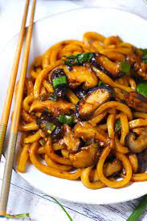

Mushroom Udon Stir Fry from the gram
main page

Ingredients
- regular soy sauce
- dark soy sauce
- oyster sauce
pepper
- oil
- garlic
- green onions
- napa cabage
- udon
- water
- enoki mushrooms
Instructions
- in a bowl combine regular soy sause, dark soy sauce, oyster sauce, sesseme oil, black pepper
- in a wok add water and boil frozen udon until lossened
- strain imediatly
- in another wok add oil, garlic, green onions and cook for 15 seconds
- add king oyster mushrooms and enoki mushrooms on med heat and cook until soft
- add udon and sause and napa cabage
- cook until cabage has wilted
- serve and enjoy